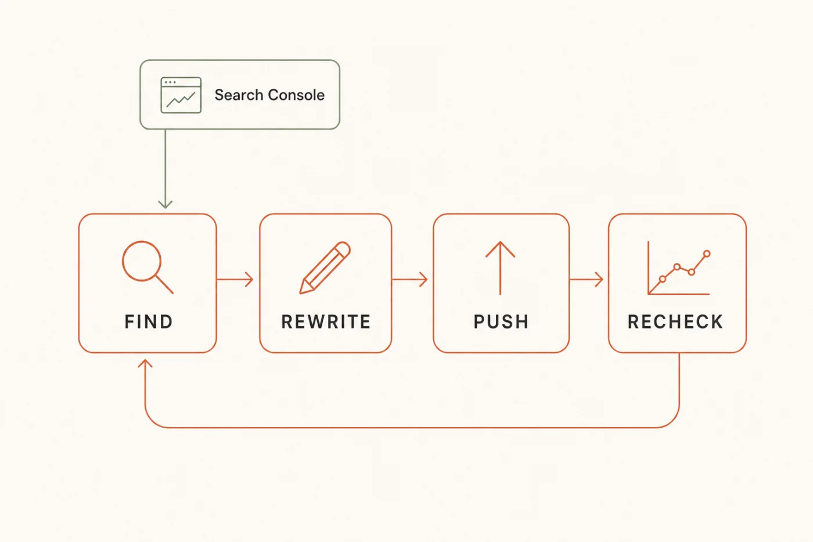
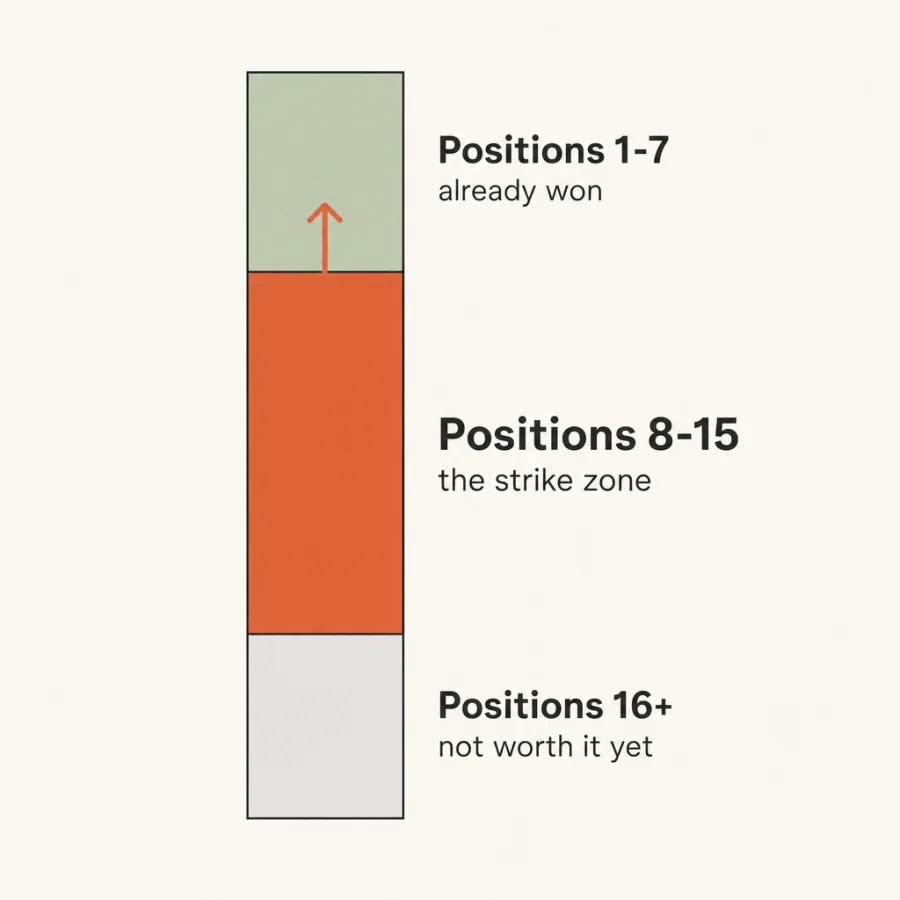
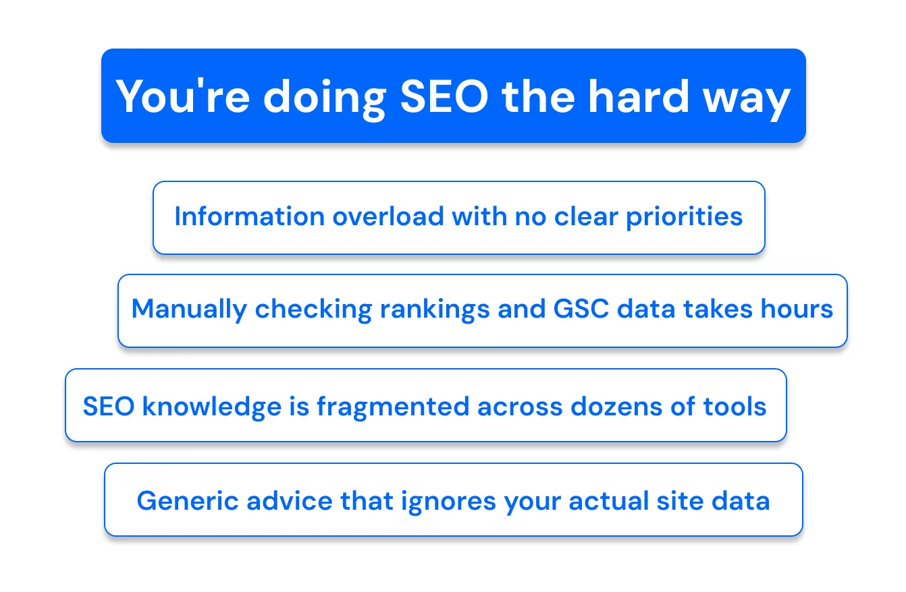

The Claude
SEO System
Stop chasing new keywords. Find the pages Google already wants to rank, fix them, and recheck on autopilot.
How a solo founder gained 14,500 organic clicks in 100 days →
Free · No credit card required

Most people use Claude to write blog articles
That's about 2% of what it can do for SEO — and it's the 2% with the longest payback.
A new article starts at position nothing. It needs to be indexed, then crawled again, then earn enough signal to climb past everyone already there. Three to six months if it works at all, and most of them don't.
Meanwhile there is a list sitting in your Search Console of pages Google already decided to show. They're on page two. They collect impressions and almost no clicks. Nobody is writing them; they're just being ignored.
The difference is intent. Stop chasing new keywords thinking that will fix your website. Start fixing the pages Google already wants to rank.
Step 1 — The exact filters that surface quick wins
Two cuts. Everything else in that report is noise for this job.
Open Search Console → Performance → Search results. Before anything else, set the report up so the numbers you need are actually on screen:
- Date range: Last 3 months. 28 days is too jumpy to tell a real position from a bad week.
- Toggle on all four metrics — Clicks, Impressions, CTR, Average position. Three of the four are off by default, which is why most people never see this list.
- Work in the Pages tab for cut one, the Queries tab for cut two.
- Hit Export → CSV. The filter menu in Search Console only filters by query, page, country, device, search appearance and date — there is no "position greater than" control. The numeric cuts happen in the export.
Cut 1 — The strike zone: average position 8 to 15
In the export, keep only rows where average position is between 8 and 15, then sort by impressions descending.
Above 8 you're already on page one and the remaining gain is small. Below 15 you're two pages back and a title rewrite won't carry you. Between them is where a page has proven relevance but is losing on presentation — which is a fifteen-minute fix, not a content project.

Cut 2 — The CTR gap: 500+ impressions, under 1% CTR
Switch to Queries, export, and keep only rows with more than 500 impressions and a CTR below 1%.
This is a different failure. The page is being shown — often plenty — and people are reading your title and choosing someone else. That is not a ranking problem, it's a promise problem, and it's the single cheapest thing to fix in SEO because it needs no new content and no developer.
Why 500. Below a few hundred impressions a 0.8% CTR is three clicks versus four — noise, not a signal. 500 is where the number starts meaning something. Raise it if you're a bigger site; the point is to have a floor at all.
Now hand the export to Claude and make it pick one. This is the prompt that turns two lists into a decision:
Here are rows from my Google Search Console export. Columns: page (or query), clicks, impressions, CTR, average position. [PASTE ROWS] My site: [domain] What we sell: [one sentence] The pages that make us money: [1-3 urls] Pick the SINGLE best quick win from this data. Score every row on: - Proximity — is it 8-15? Closer to 8 is worth more. - Demand — impressions. Real volume, not a rounding error. - Gap — how far its CTR sits below what that position normally earns. - Money — does it touch a page that can actually produce revenue? Return exactly this, nothing else: 1. THE PAGE (or query) — the winner 2. Its current position, impressions and CTR, quoted from my data 3. WHY IT'S STUCK — ranking problem or click problem? Say which, and what in the data tells you that. 4. The realistic upside in clicks/month if fixed. Show the arithmetic from MY numbers. If you can't compute it from what I pasted, say "cannot compute from this data" — do not estimate a number. 5. THE ONE THING to do this week. Use only the numbers I pasted. Never invent a volume, a position or a benchmark CTR you cannot point to in my data. Do not rank the runners-up.
One honest caveat, since you'll hit it in about four minutes. This system runs on a CSV you export by hand. Claude can reason brilliantly about the rows you paste — and it cannot see the rows you didn't, refresh them tomorrow, or check whether last week's fix moved. Every prompt here says "say cannot compute rather than estimate", and you will hit that line.
That's the gap ChatSEO closes: it connects to your Search Console directly, so the strike zone and the CTR gap are a live list instead of a Tuesday export — and "cannot compute" becomes a number. Free to try, no card →
Step 2 — The prompts that rewrite titles and metas
Copy-paste. Both of these end in something you can ship, not options to consider.
Order matters here. Diagnose the intent first, then write. Rewriting a title before you know what the searcher actually wanted is how you produce a prettier version of the same miss.
The intent check
Why they're scrolling past you. Run this before writing anything.
Query: [QUERY] My page: [URL] My current title tag: [TITLE] My current meta description: [META] Position: [N] · Impressions: [N] · CTR: [N]% Someone types that query and does not click me. Tell me why. Return exactly: 1. THE JOB — what is the person typing this actually trying to get done? One sentence. Not the topic, the job. 2. WHAT THEY EXPECT TO SEE in a result before they'll click — the format, the specificity, the reassurance. Be concrete. 3. WHAT MY TITLE PROMISES INSTEAD — quote the gap. 4. THE VERDICT — pick one: (a) intent mismatch — my page answers a different question (b) presentation — right page, title doesn't say so (c) SERP feature — the clicks are going somewhere I can't win 5. If (a), say plainly whether the page is worth fixing or whether this query needs a different page. If you cannot load my URL, say so and ask me to paste the page. Do not describe what you assume is on it.
The rewrite
One title, one meta, ready to paste into your CMS.
Using the intent you just identified, rewrite my title tag and meta description for [URL], targeting [QUERY]. Constraints — these are hard: - Title: under 60 characters. Count them and show the count. - Meta: under 155 characters. Count them and show the count. - The primary query appears in the title, near the front, reading naturally. If it can't read naturally, say so rather than forcing it. - The title must promise what the page actually delivers. If the page doesn't deliver it, tell me — do not write a promise I can't keep. - No "Ultimate Guide", no "Everything You Need to Know", no year padding unless the page is genuinely updated for that year. - The meta earns the click. It does not summarise the page. Return exactly: - TITLE (with character count) - META (with character count) - WHAT CHANGED — the one substantive difference versus my current title, in one line. Not "more compelling". The actual change. - WHAT I'M BETTING ON — the single assumption about the searcher this rewrite depends on, so I know what I disproved if it fails. One version of each. Do not give me three options to choose between.
Then ship it. Paste the title and meta into your CMS and publish — that's the whole "push" stage. It's fifteen minutes and it's where most people stall, because the audit spreadsheet feels like progress and the CMS edit feels like work. The spreadsheet has never moved a position.
Step 3 — The agent that surfaces opportunities daily
The system is only worth building if it runs without you remembering to run it.
Steps 1 and 2 are a Tuesday. This step is what makes it a system: a saved instruction that does the triage before you sit down, so the work waiting for you is a decision, not a data pull.
Save the block below as a Claude Project instruction (or a ChatSEO memory, or whatever your tool calls a system prompt). Then your daily interaction is: drop in the fresh export, and it hands you one page.
You are my SEO opportunity scout. You run once a day against Google Search Console data I give you. MY CONTEXT Site: [domain] What we sell: [one sentence] Who buys it: [persona + the trigger that makes them look] Money pages: [1-3 urls] Already fixed (do not resurface these): [running list — add to it] YOUR JOB Each time I paste an export, find the one opportunity worth my next 30 minutes. Nothing else. RULES - Only consider rows in position 8-15, OR rows with 500+ impressions and CTR under 1%. - Never resurface a page from "already fixed" unless 21+ days have passed AND its position has not improved. Then say so explicitly. - Prefer money pages over informational ones when scores are close. - Never invent a number. If something can't be computed from what I pasted, say "cannot compute from this data" and name the export that would answer it. - If nothing clears the bar today, say "nothing worth doing today" and stop. A quiet day is a valid answer. Do not manufacture work. YOUR OUTPUT — always exactly this shape, never longer: TODAY'S PAGE: [url] THE NUMBER: [position, impressions, CTR — quoted from my data] THE PROBLEM: [one sentence] THE ACTION: [one thing, doable in 30 minutes] RECHECK ON: [date, 21 days out] Then stop. No summary, no runners-up, no "other things to consider".
Two things make that instruction work, and both are easy to delete by accident.
- The "already fixed" list. Without it the agent hands you the same page every morning, because it's still the highest-scoring row until Google recrawls. Add each page as you ship it.
- Permission to say nothing. An agent that must produce an opportunity every day will produce a bad one on day six. "Nothing worth doing today" is the answer that keeps you trusting the other five.
The recheck — the stage everyone drops
Twenty-one days after a fix, the loop closes. Pull the same query, compare, and decide. This is the prompt that stops a change you never verified from becoming a belief:
On [DATE] I changed the title and meta on [URL] targeting [QUERY]. Before — position [N], impressions [N], CTR [N]% After — position [N], impressions [N], CTR [N]% Return exactly: 1. DID IT WORK — yes / no / too early to tell. Pick one. 2. WHICH METRIC MOVED — position, CTR, or neither. These mean different things. Say which one and what it implies. 3. IS IT REAL — could this be seasonality, a Google update, or an impression-volume change rather than my edit? Say how confident you are and why. 4. THE ASSUMPTION — I bet on [WHAT I'M BETTING ON, from the rewrite]. Was it confirmed or disproved? 5. NEXT — keep it, revert it, or try one more thing. One choice. If 21 days isn't enough to tell from these numbers, say so plainly instead of finding a story in the noise.
Step 4 — The four-week plan
From flat clicks to a loop that compounds. About 30 minutes a day.
The plan is deliberately slow in week one. Everyone wants to fix twenty pages on day one; you then have twenty changes in flight, no idea which did anything, and no reason to trust the system enough to keep running it.
| Week | What you do | You end the week with |
|---|---|---|
| 1 · Find | Export both cuts. Run the triage prompt. Fix one page, end to end. | One page shipped, one recheck date in the calendar |
| 2 · Fix | Three more pages from the strike zone. Intent check, rewrite, publish. | Four pages live. Still zero results — that's expected |
| 3 · Automate | Save the agent instruction. Run it daily. Ship what it gives you. | The list comes to you instead of you pulling it |
| 4 · Recheck | Week 1's fixes are 21 days old. Run the recheck prompt on each. | Evidence about your site, and a loop that now has input |
Week four is the one that matters and the one people never reach. Up to then you're following someone else's method. After the first recheck you're running on your own data: you know which rewrites moved your pages, in your niche, for your searchers. That's when it stops being a checklist and starts compounding.
The four things that kill this
1. Widening the filters
Position 8-15 and 500 impressions feel arbitrary, so people loosen them and get 400 rows back. The whole value of this system is that it returns a short list. A long list is the audit spreadsheet you were trying to escape.
2. Rewriting before diagnosing
If the page answers a different question than the query asks, a better title just gets you a higher bounce rate. Run the intent check first. Sometimes the honest answer is that the page shouldn't target that query at all.
3. Fixing twenty pages at once
Ship one, recheck it, learn something. Twenty simultaneous changes tell you nothing about which rewrite pattern works for your audience — and that lesson is the actual asset.
4. Never rechecking
The loop only compounds if it closes. Without the recheck you're just doing on-page edits forever, with a growing pile of untested opinions about what Google likes.
Where this still needs you
- The export. Every number here has to come from Search Console. The model reasons about your data — it should never be the source of it.
- The publish. Nothing above touches your site. Someone still opens the CMS and pastes the title in.
- Killing a page. No prompt will tell you to stop optimising something that will never rank. That call is yours.
- Deciding what "worth it" means. A query with 900 impressions might be your entire ICP or entirely students. Only you know.
How one founder went from 250 → 750 clicks a day
He added +14,500 clicks just by chatting with AI.
No SEO expertise. He simply ran the recommendations he was given.

Why this works when old SEO tools don't
Here's the blunt truth about SEO in 2026.
Old SEO tools
- A 40-tab audit spreadsheet nobody finishes
- Hours of exporting before you learn anything
- Keyword lists for pages that don't exist yet
- Generic advice that works for everyone, therefore no one
- Far too expensive
What you actually want
- The one page to fix, found in 30 seconds
- A live list, not a Tuesday export
- Pages Google already wants to rank
- Every recommendation from your positions and queries
- One thing to do, not a dashboard to read

That's the entire idea behind ChatSEO
One SEO employee that reads your Search Console, finds the page sitting at position nine, and tells you the single next thing to do about it.
Try ChatSEO free →No credit card required